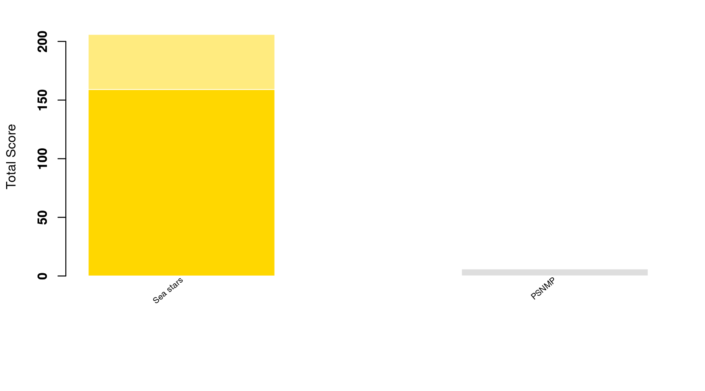

Content
You can view all the wildlife we recorded at this event on iNaturalist here.


| Records | 73 |
| Species | 38 |
| Verified species | 25 |
| Observers | 6 |
| Verified score | 469 |
| Unverified score | 838 |
| Top species | Athanas nitescens - Hooded Shrimp |
| Top species score | 33 |
Congratulations to Sea stars for taking the gold medal in this BioBlitz Battle! And well done to everyone for a great game and some fantastic wildlife finds.

| Species | Potential Score | Confirmed Score | |
|---|---|---|---|
| Laura Coles | 15 | 206 | 159 |
| Harita Ravuru | 18 | 278 | 128 |
| nellis1 | 18 | 251 | 90 |
| belle_k | 7 | 79 | 50 |
| Jessica Stevens | 1 | 5 | 0 |
| cconnis99 | 1 | 1 | 0 |
A total of 5 species with a rarity score of 15 or higher have verified records:


Community verified records only
Click any image to view the original photo and licence details on iNaturalist.
| Name | Rarity Score | |
|---|---|---|

|
Nerophis lumbriciformis - Worm Pipefish | 13 |

|
Ocenebra erinaceus - European Sting Winkle | 15 |

|
Littorina | 6 |

|
Archidoris pseudoargus - Sea Lemon | 15 |

|
Calliostoma zizyphinum - European Painted Top Shell | 12 |

|
Steromphala umbilicalis - Purple Topshell | 9 |

|
Magallana gigas - Pacific Oyster | 11 |

|
Perforatus perforatus - Perforated Barnacle | 18 |

|
Xantho hydrophilus - Montagu’s Crab | 9 |

|
Cancer pagurus - Edible Crab | 8 |

|
Pagurus bernhardus - Common Hermit Crab | 9 |

|
Porcellana platycheles - Hairy Porcelain Crab | 10 |

|
Athanas nitescens - Hooded Shrimp | 33 |

|
Amphipoda - Amphipods | 9 |

|
Spirobranchus triqueter - Keeled Tubeworm | 14 |

|
Actinia equina - Atlantic Beadlet Anemone | 8 |
| Actinia fragacea - Strawberry Anemone | 10 | |

|
Amphipholis squamata - Dwarf Brittle Star | 13 |

|
Halichondriidae | 10 |

|
Lineus longissimus - Bootlace Worm | 28 |

|
Ulva lactuca - Broadleaf Sea Lettuce | 10 |

|
Himanthalia elongata - Thongweed | 11 |

|
Fucus serratus - Saw Wrack | 8 |

|
Saccharina latissima - Sugar Kelp | 12 |
| Laminaria digitata - Oarweed | 12 |